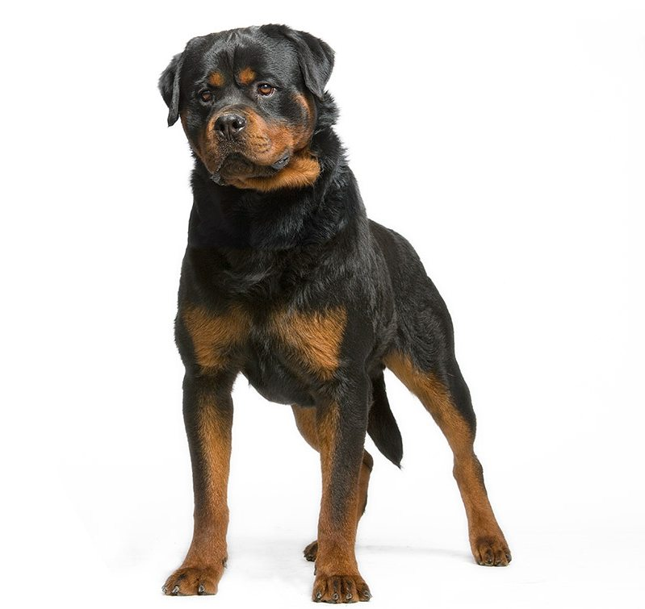

Rottweiler
| Weight | 34 -59 kg |
| Coat | Short, flat, hard coat of medium lenght |
| Color | Black with tan markings |
Rottweilers have been selected for guarding and protection work, and this must be kept in mind at all times. Well-socialized rottweilers get along nicely with people and other dogs, but males in particular can be a bit aggressive and dominant. Active, intelligent dogs, they are fully confident enough to act on their own, so they need guidance right from the start.